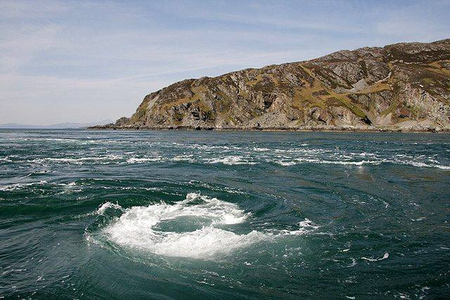
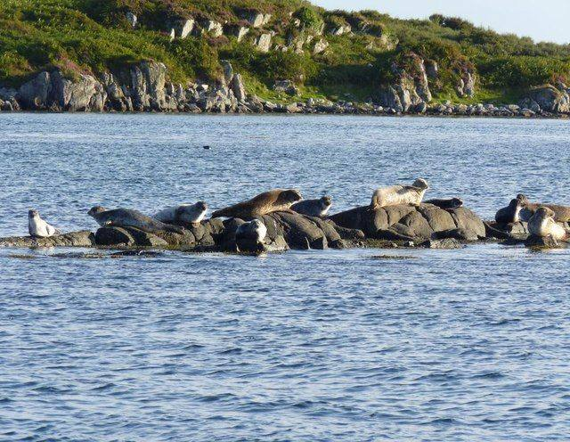
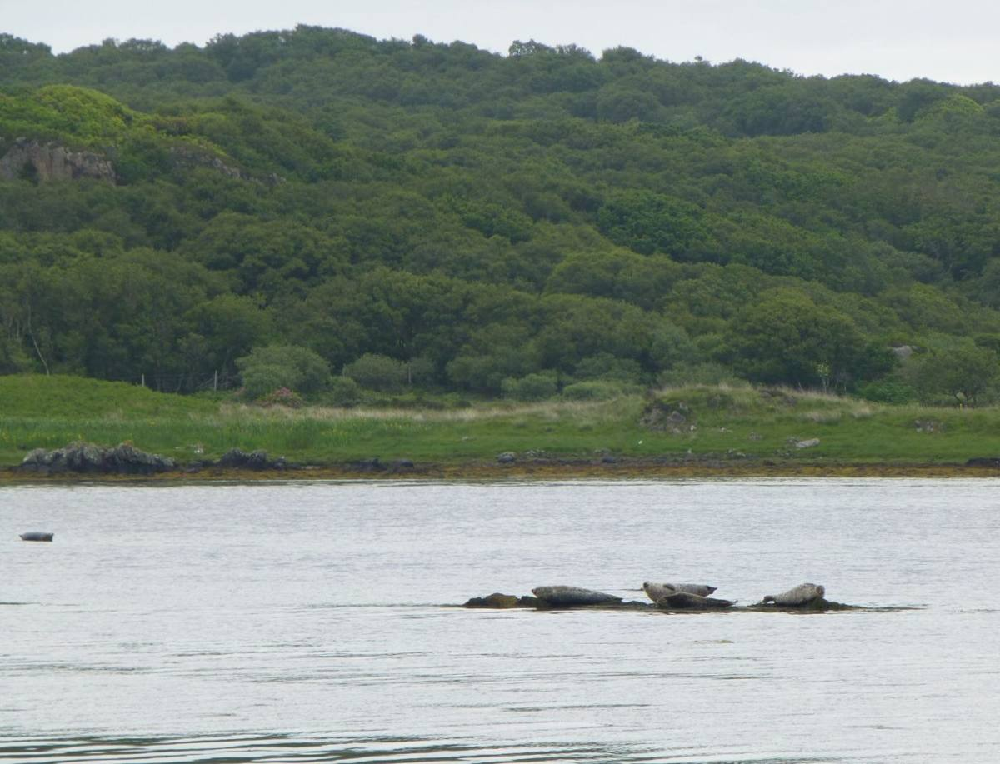

See Islay from the water. The wildlife trip leaves from the harbour in our own village and runs along the south-east coast, right past Laphroaig, Lagavulin and Ardbeg.
On the way you're likely to see common seals hauled out on the skerries, red deer on the shore and plenty of seabirds. With luck there are dolphins, white-tailed eagles, basking sharks or even minke whales.
The longer Corryvreckan trip leaves from Port Askaig and runs up the Sound of Jura to the whirlpool between Jura and Scarba, one of the biggest in the world. How wild it looks depends on the tide.
Book with Islay Sea Adventures →What it looks like



Photographs from Wikimedia Commons: Charlie Marshall, CC BY 2.0; Walter Baxter, CC BY-SA 2.0; Becky Williamson, CC BY-SA 2.0; Russel Wills, CC BY-SA 2.0. Prices are 2026 figures in pounds, with rand at £1 = R22.19. Check before booking.